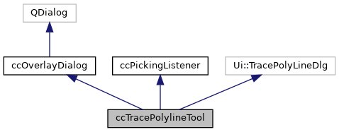
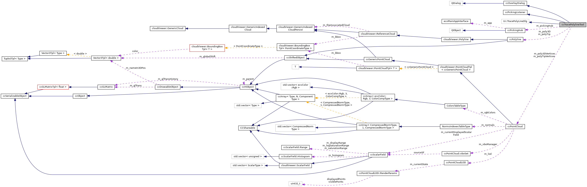

|
ACloudViewer
3.9.4
A Modern Library for 3D Data Processing
|
|
ACloudViewer
3.9.4
A Modern Library for 3D Data Processing
|
Graphical Polyline Tracing tool. More...
#include <ecvTracePolylineTool.h>


Classes | |
| struct | SegmentGLParams |
| Viewport parameters (used for picking) More... | |
Public Member Functions | |
| ccTracePolylineTool (ccPickingHub *pickingHub, QWidget *parent) | |
| Default constructor. More... | |
| virtual | ~ccTracePolylineTool () |
| Destructor. More... | |
| virtual bool | linkWith (QWidget *win) override |
| Links the overlay dialog with a MDI window. More... | |
| virtual bool | start () override |
| Starts process. More... | |
| virtual void | stop (bool accepted) override |
| Stops process/dialog. More... | |
 Public Member Functions inherited from ccOverlayDialog Public Member Functions inherited from ccOverlayDialog | |
| ccOverlayDialog (QWidget *parent=nullptr, Qt::WindowFlags flags=Qt::FramelessWindowHint|Qt::Tool) | |
| Default constructor. More... | |
| ~ccOverlayDialog () override | |
| Destructor. More... | |
| void | reject () override |
| void | addOverridenShortcut (Qt::Key key) |
| bool | started () const |
| Returns whether the tool is currently started or not. More... | |
| Public Member Functions inherited from ccPickingListener | |
| virtual | ~ccPickingListener ()=default |
| virtual void | onItemPicked (const PickedItem &pi)=0 |
| Method called whenever an item is picked. More... | |
Protected Slots | |
| void | apply () |
| void | cancel () |
| void | exportLine () |
| void | continueEdition () |
| void | resetLine () |
| void | closePolyLine (int x=0, int y=0) |
| void | updatePolyLineTip (int x, int y, Qt::MouseButtons buttons) |
| void | onWidthSizeChanged (int) |
| void | onShortcutTriggered (int) |
| To capture overridden shortcuts (pause button, etc.) More... | |
| virtual void | onItemPicked (const PickedItem &pi) override |
| Inherited from ccPickingListener. More... | |
| Protected Slots inherited from ccOverlayDialog | |
| virtual void | onLinkedWindowDeletion (QObject *object=nullptr) |
| Slot called when the linked window is deleted (calls 'onClose') More... | |
Protected Member Functions | |
| void | restart (bool reset) |
| Restarts the edition mode. More... | |
| void | resetTip () |
| void | updateTip () |
| void | resetPoly3D () |
| void | updatePoly3D () |
| ccPolyline * | polylineOverSampling (unsigned steps) const |
| Oversamples the active 3D polyline. More... | |
| Protected Member Functions inherited from ccOverlayDialog | |
| bool | eventFilter (QObject *obj, QEvent *e) override |
Protected Attributes | |
| ccPolyline * | m_polyTip |
| 2D polyline (for the currently edited part) More... | |
| ccPointCloud * | m_polyTipVertices |
| 2D polyline vertices More... | |
| ccPolyline * | m_poly3D |
| 3D polyline More... | |
| ccPointCloud * | m_poly3DVertices |
| 3D polyline vertices More... | |
| std::vector< SegmentGLParams > | m_segmentParams |
| Viewport parameters use to draw each segment of the polyline. More... | |
| bool | m_done |
| Current process state. More... | |
| ccPickingHub * | m_pickingHub |
| Picking hub. More... | |
| Protected Attributes inherited from ccOverlayDialog | |
| QWidget * | m_associatedWin |
| Associated (MDI) window. More... | |
| bool | m_processing |
| Running/processing state. More... | |
| QList< int > | m_overriddenKeys |
| Overridden keys. More... | |
Additional Inherited Members | |
| Signals inherited from ccOverlayDialog | |
| void | processFinished (bool accepted) |
| Signal emitted when process is finished. More... | |
| void | shortcutTriggered (int key) |
| Signal emitted when an overridden key shortcut is pressed. More... | |
| void | shown () |
| Signal emitted when a 'show' event is detected. More... | |
Graphical Polyline Tracing tool.
Definition at line 28 of file ecvTracePolylineTool.h.
|
explicit |
Default constructor.
Definition at line 50 of file ecvTracePolylineTool.cpp.
References ccHObject::addChild(), ccOverlayDialog::addOverridenShortcut(), cloudViewer::PointCloudTpl< T >::addPoint(), cloudViewer::ReferenceCloud::addPointIndex(), apply(), cancel(), continueEdition(), exportLine(), ecvColor::green(), m_polyTip, m_polyTipVertices, onShortcutTriggered(), onWidthSizeChanged(), cloudViewer::ReferenceCloud::reserve(), ccPointCloud::reserve(), resetLine(), ccPolyline::set2DMode(), ccObject::setEnabled(), ccPolyline::setForeground(), ccDrawableObject::setTempColor(), ccPolyline::setWidth(), and ccOverlayDialog::shortcutTriggered().
|
virtual |
Destructor.
Definition at line 107 of file ecvTracePolylineTool.cpp.
|
protectedslot |
Definition at line 592 of file ecvTracePolylineTool.cpp.
References exportLine(), and stop().
Referenced by ccTracePolylineTool(), and onShortcutTriggered().
|
protectedslot |
Definition at line 597 of file ecvTracePolylineTool.cpp.
References resetLine(), and stop().
Referenced by ccTracePolylineTool(), and onShortcutTriggered().
|
protectedslot |
Definition at line 483 of file ecvTracePolylineTool.cpp.
References m_done, m_pickingHub, m_poly3D, m_polyTip, ecvDisplayTools::NO_PICKING, ccPickingHub::removeListener(), resetLine(), ccObject::setEnabled(), ecvDisplayTools::SetPickingMode(), cloudViewer::ReferenceCloud::size(), and updateTip().
Referenced by linkWith().
|
inlineprotectedslot |
Definition at line 49 of file ecvTracePolylineTool.h.
References restart().
Referenced by ccTracePolylineTool().
|
protectedslot |
Definition at line 559 of file ecvTracePolylineTool.cpp.
References MainWindow::addToDB(), ecvColor::green(), m_poly3D, m_poly3DVertices, m_segmentParams, polylineOverSampling(), resetLine(), resetPoly3D(), ccPolyline::setColor(), ccDrawableObject::setTempColor(), and MainWindow::TheInstance().
Referenced by apply(), and ccTracePolylineTool().
|
overridevirtual |
Links the overlay dialog with a MDI window.
Warning: link can't be modified while dialog is displayed/process is running!
Reimplemented from ccOverlayDialog.
Definition at line 263 of file ecvTracePolylineTool.cpp.
References closePolyLine(), ccOverlayDialog::linkWith(), m_poly3D, m_polyTip, ecvDisplayTools::mouseMoved(), ecvDisplayTools::rightButtonClicked(), ecvDisplayTools::TheInstance(), and updatePolyLineTip().
|
overrideprotectedvirtualslot |
Inherited from ccPickingListener.
Definition at line 407 of file ecvTracePolylineTool.cpp.
References ccHObject::addChild(), cloudViewer::PointCloudTpl< T >::addPoint(), cloudViewer::ReferenceCloud::addPointIndex(), ccPickingListener::PickedItem::clickPoint, ccPickingListener::PickedItem::entity, CVLog::Error(), ecvDisplayTools::GetCurrentScreen(), ccShiftedObject::getGlobalScale(), ccShiftedObject::getGlobalShift(), cloudViewer::PointCloudTpl< T >::getPointPersistentPtr(), ecvColor::green(), m_poly3D, m_poly3DVertices, m_polyTip, m_polyTipVertices, m_segmentParams, ccPickingListener::PickedItem::P3D, cloudViewer::ReferenceCloud::reserve(), ccPointCloud::reserve(), ccPolyline::set2DMode(), ccObject::setEnabled(), ccPolyline::setGlobalScale(), ccPolyline::setGlobalShift(), ccDrawableObject::setRedraw(), ccDrawableObject::setTempColor(), ccPolyline::setWidth(), cloudViewer::PointCloudTpl< T >::size(), ccHObjectCaster::ToGenericPointCloud(), ecvDisplayTools::ToVtkCoordinates(), updatePoly3D(), Tuple3Tpl< Type >::x, and Tuple3Tpl< Type >::y.
|
protectedslot |
To capture overridden shortcuts (pause button, etc.)
Definition at line 119 of file ecvTracePolylineTool.cpp.
References apply(), and cancel().
Referenced by ccTracePolylineTool().
|
protectedslot |
Definition at line 603 of file ecvTracePolylineTool.cpp.
References ecvDisplayTools::GetCurrentScreen(), m_poly3D, m_polyTip, ccPolyline::setWidth(), updatePoly3D(), updateTip(), and width.
Referenced by ccTracePolylineTool().
|
protected |
Oversamples the active 3D polyline.
Definition at line 135 of file ecvTracePolylineTool.cpp.
References ccHObject::addChild(), cloudViewer::ReferenceCloud::addPointIndex(), ccHObject::filterChildren(), Vector3Tpl< PointCoordinateType >::fromArray(), ecvDisplayTools::GetCurrentScreen(), ccObject::getName(), cloudViewer::GenericIndexedCloud::getPoint(), cloudViewer::PointCloudTpl< T >::getPoint(), ecvDisplayTools::GetSceneDB(), ccPolyline::importParametersFrom(), cloudViewer::Polyline::isClosed(), ccObject::isEnabled(), m_poly3D, m_poly3DVertices, m_segmentParams, CV_TYPES::MESH, CV_TYPES::POINT_CLOUD, ccGenericPointCloud::pointPicking(), cloudViewer::ReferenceCloud::reserve(), cloudViewer::PointCloudTpl< T >::size(), cloudViewer::ReferenceCloud::size(), ccGenericMesh::trianglePicking(), Tuple3Tpl< Type >::u, and CVLog::Warning().
Referenced by exportLine().
|
inlineprotectedslot |
Definition at line 50 of file ecvTracePolylineTool.h.
References restart().
Referenced by cancel(), ccTracePolylineTool(), closePolyLine(), exportLine(), and start().
|
protected |
Definition at line 622 of file ecvTracePolylineTool.cpp.
References ecvDisplayTools::GetCurrentScreen(), ccHObject::getViewId(), m_poly3D, ecvDisplayTools::RemoveWidgets(), and WIDGET_POLYLINE.
Referenced by exportLine(), and restart().
|
protected |
Definition at line 639 of file ecvTracePolylineTool.cpp.
References ecvDisplayTools::GetCurrentScreen(), ccHObject::getViewId(), m_polyTip, ecvDisplayTools::RemoveWidgets(), and WIDGET_POLYLINE.
Referenced by stop().
|
protected |
Restarts the edition mode.
Definition at line 515 of file ecvTracePolylineTool.cpp.
References ccPickingHub::addListener(), CVLog::Error(), m_done, m_pickingHub, m_poly3D, m_poly3DVertices, m_polyTip, m_segmentParams, resetPoly3D(), ccObject::setEnabled(), and updateTip().
Referenced by continueEdition(), and resetLine().
|
overridevirtual |
Starts process.
Reimplemented from ccOverlayDialog.
Definition at line 284 of file ecvTracePolylineTool.cpp.
References ecvDisplayTools::GetCurrentScreen(), ecvDisplayTools::INTERACT_CTRL_PAN, ecvDisplayTools::INTERACT_SIG_MOUSE_MOVED, ecvDisplayTools::INTERACT_SIG_RB_CLICKED, m_pickingHub, m_poly3D, m_polyTip, ecvDisplayTools::NO_PICKING, ccPickingHub::removeListener(), resetLine(), s_defaultPickingRadius, s_overSamplingCount, ecvDisplayTools::SetInteractionMode(), ecvDisplayTools::SetPickingMode(), ccOverlayDialog::start(), ecvDisplayTools::TRANSFORM_CAMERA(), and CVLog::Warning().
|
overridevirtual |
Stops process/dialog.
Automatically emits the 'processFinished' signal (with input state as argument).
| accepted | process/dialog result |
Reimplemented from ccOverlayDialog.
Definition at line 317 of file ecvTracePolylineTool.cpp.
References ecvDisplayTools::DisplayNewMessage(), ecvDisplayTools::GetCurrentScreen(), m_pickingHub, m_polyTip, ecvDisplayTools::MANUAL_SEGMENTATION_MESSAGE, ccPickingHub::removeListener(), resetTip(), s_defaultPickingRadius, s_overSamplingCount, ecvDisplayTools::SetInteractionMode(), ccOverlayDialog::stop(), ecvDisplayTools::TRANSFORM_CAMERA(), and ecvDisplayTools::UPPER_CENTER_MESSAGE.
|
protected |
Definition at line 631 of file ecvTracePolylineTool.cpp.
References ecvDisplayTools::DrawWidgets(), ecvDisplayTools::GetCurrentScreen(), m_poly3D, and WIDGET_POLYLINE.
Referenced by onItemPicked(), and onWidthSizeChanged().
|
protectedslot |
Definition at line 341 of file ecvTracePolylineTool.cpp.
References ecvDisplayTools::GetCurrentScreen(), ecvDisplayTools::GetGLCameraParameters(), cloudViewer::PointCloudTpl< T >::getPoint(), cloudViewer::PointCloudTpl< T >::getPointPersistentPtr(), ccObject::isEnabled(), m_done, m_poly3DVertices, m_polyTip, m_polyTipVertices, ccGLCameraParameters::project(), ccObject::setEnabled(), cloudViewer::PointCloudTpl< T >::size(), ecvDisplayTools::ToVtkCoordinates(), updateTip(), Tuple3Tpl< Type >::x, and Tuple3Tpl< Type >::y.
Referenced by linkWith().
|
protected |
Definition at line 648 of file ecvTracePolylineTool.cpp.
References ecvDisplayTools::DrawWidgets(), ecvDisplayTools::GetCurrentScreen(), m_polyTip, and WIDGET_POLYLINE.
Referenced by closePolyLine(), onWidthSizeChanged(), restart(), and updatePolyLineTip().
|
protected |
Current process state.
Definition at line 102 of file ecvTracePolylineTool.h.
Referenced by closePolyLine(), restart(), and updatePolyLineTip().
|
protected |
Picking hub.
Definition at line 105 of file ecvTracePolylineTool.h.
Referenced by closePolyLine(), restart(), start(), and stop().
|
protected |
3D polyline
Definition at line 94 of file ecvTracePolylineTool.h.
Referenced by closePolyLine(), exportLine(), linkWith(), onItemPicked(), onWidthSizeChanged(), polylineOverSampling(), resetPoly3D(), restart(), start(), updatePoly3D(), and ~ccTracePolylineTool().
|
protected |
3D polyline vertices
Definition at line 96 of file ecvTracePolylineTool.h.
Referenced by exportLine(), onItemPicked(), polylineOverSampling(), restart(), and updatePolyLineTip().
|
protected |
2D polyline (for the currently edited part)
Definition at line 89 of file ecvTracePolylineTool.h.
Referenced by ccTracePolylineTool(), closePolyLine(), linkWith(), onItemPicked(), onWidthSizeChanged(), resetTip(), restart(), start(), stop(), updatePolyLineTip(), updateTip(), and ~ccTracePolylineTool().
|
protected |
2D polyline vertices
Definition at line 91 of file ecvTracePolylineTool.h.
Referenced by ccTracePolylineTool(), onItemPicked(), and updatePolyLineTip().
|
protected |
Viewport parameters use to draw each segment of the polyline.
Definition at line 99 of file ecvTracePolylineTool.h.
Referenced by exportLine(), onItemPicked(), polylineOverSampling(), and restart().